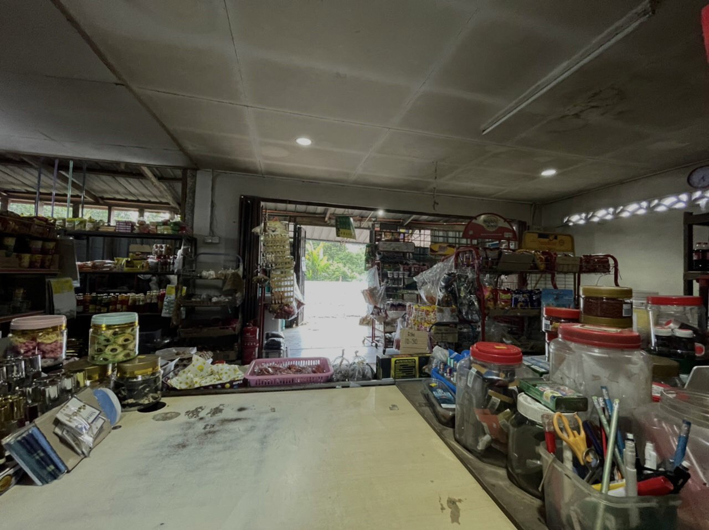
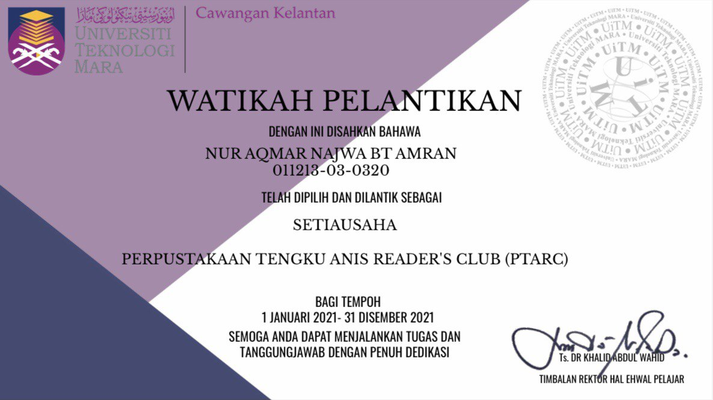

E X P E R I E N C E S
Since I did not explain much about my experiences in my video, why not I clear up it to you here!
Cashier
My father opened a grocery store in 2013 when he began operating his business. Therefore, I've chosen to undertake a part-time job with him while I'm in school and a full-time job with him during school holidays or semester breaks. I work there from 6 p.m. to 12 a.m. as a cashier. Not only that, but everytime my father restocks the store, I am in charge of reorganising the merchandise.
Secretary of PTARC
On 1 January 2021, I officially become a secretary of Perpustakaan Tengku Anis Reader's Club for one year (two semester). Being a secretary trained me and shaped me into a person with excellent communication skills, a desire to work in a team, and strong leadership abilities. I enjoyed working as a secretary because it has been one of my dreams since elementary school to establish a club and activities. In addition, I can make new acquaintances at university and improve my social skills by interacting with them!